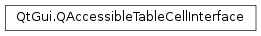

QAccessibleTableCellInterface¶
Detailed Description¶
The
PySide2.QtGui.QAccessibleTableCellInterfaceclass implements support for the IAccessibleTable2 Cell interface.IAccessible2 Specification
-
class
PySide2.QtGui.QAccessibleTableCellInterface¶
-
PySide2.QtGui.QAccessibleTableCellInterface.columnExtent()¶ Return type: PySide2.QtCore.intReturns the number of columns occupied by this cell accessible.
-
PySide2.QtGui.QAccessibleTableCellInterface.columnHeaderCells()¶ Return type: Returns the column headers as an array of cell accessibles.
-
PySide2.QtGui.QAccessibleTableCellInterface.columnIndex()¶ Return type: PySide2.QtCore.intTranslates this cell accessible into the corresponding column index.
-
PySide2.QtGui.QAccessibleTableCellInterface.isSelected()¶ Return type: PySide2.QtCore.boolReturns a boolean value indicating whether this cell is selected.
-
PySide2.QtGui.QAccessibleTableCellInterface.rowExtent()¶ Return type: PySide2.QtCore.intReturns the number of rows occupied by this cell accessible.
-
PySide2.QtGui.QAccessibleTableCellInterface.rowHeaderCells()¶ Return type: Returns the row headers as an array of cell accessibles.
-
PySide2.QtGui.QAccessibleTableCellInterface.rowIndex()¶ Return type: PySide2.QtCore.intTranslates this cell accessible into the corresponding row index.
-
PySide2.QtGui.QAccessibleTableCellInterface.table()¶ Return type: PySide2.QtGui.QAccessibleInterfaceReturns the
PySide2.QtGui.QAccessibleInterfaceof the table containing this cell.
© 2018 The Qt Company Ltd. Documentation contributions included herein are the copyrights of their respective owners. The documentation provided herein is licensed under the terms of the GNU Free Documentation License version 1.3 as published by the Free Software Foundation. Qt and respective logos are trademarks of The Qt Company Ltd. in Finland and/or other countries worldwide. All other trademarks are property of their respective owners.